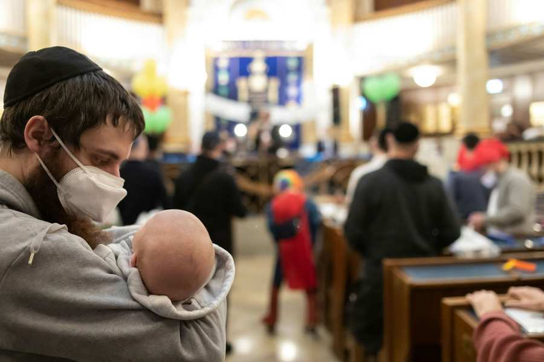
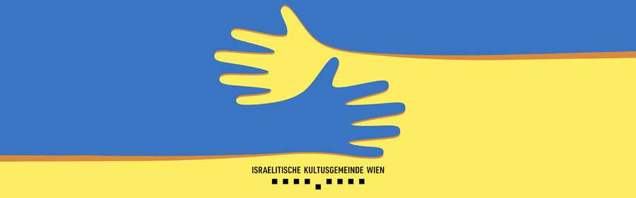
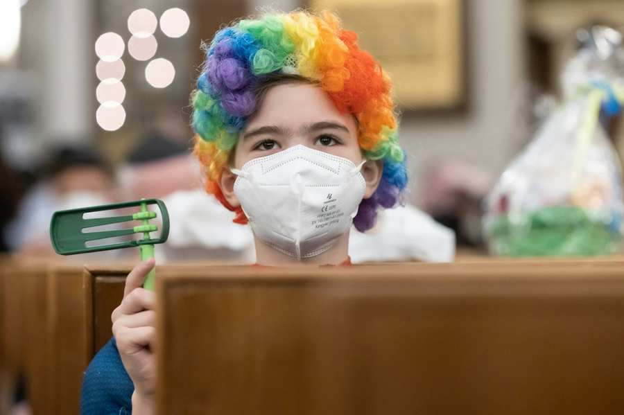
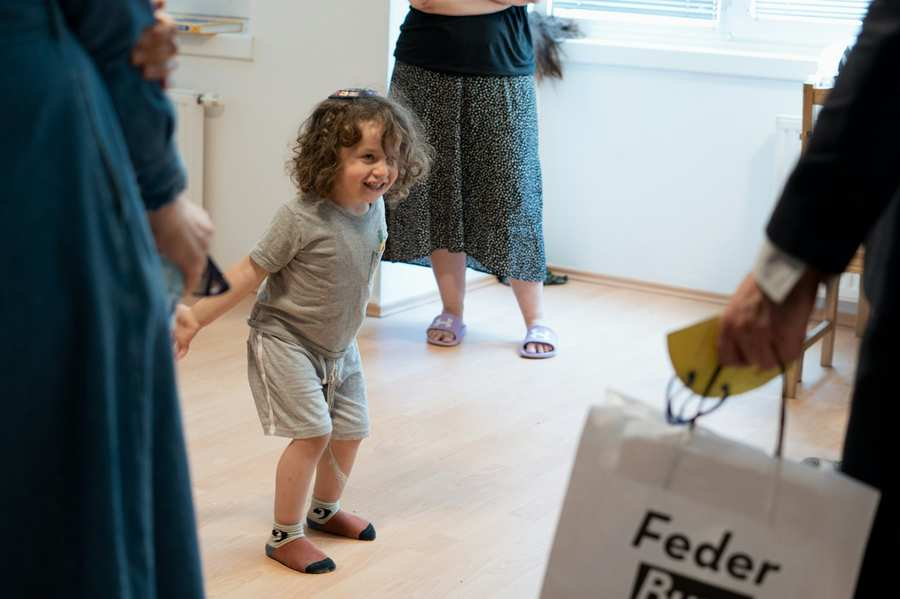
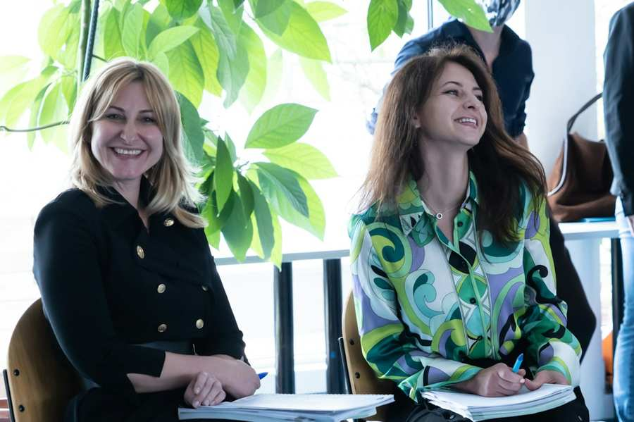

Am 24. Februar 2022 begann der Angriffskrieg Russlands auf die Ukraine. Von der ersten Minute an war klar, dass die Israelitische Kultusgemeinde Wien Hilfe leisten wird. Im Laufe der Ukraine-Krise waren es bis heute mehr als 1.200 Menschen, die gerettet bzw. versorgt werden konnten. Damit ist es das größte humanitäre Hilfsprojekt der IKG Wien in der zweiten Republik. Diese Unterstützung war die Summe der Leistung aller Gemeindemitglieder und zeigt die Stärke, die auf der Vielfalt der Kultusgemeinde fußt. Dass jeder Jude in Wien ein Wiener Jude ist, also ein Teil unserer Gemeinde, wurde mit dieser großen Hilfsaktion und der gelebten Solidarität aller Mitglieder wieder unter Beweis gestellt.

Gleich in den ersten Tagen wurde ein Krisenstab eingerichtet, die Kontakte in die Ukraine intensiviert und gemeinsam mit anderen Hilfsorganisationen schnelle und unbürokratische Unterstützung eingerichtet.
Am Anfang waren es Busse, die aus dem Grenzgebiet jüdische Geflüchtete nach Wien brachten, über WhatsApp wurde die Ankunft in Wien vorbereitet und Gemeindemitglieder spendeten ihre Zeit, Kraft, Geld, Wohnungen sowie Kleidung und Möbel, um die Erstversorgung sicherzustellen.
Als Erste Hilfe, wurde allen Ankommenden ein Startpaket geschnürt, mit Geld für jene, die ohne finanzielle Mittel ankamen, mit FFP2-Schutzmasken, einer SIM-Karte und Süßigkeiten für die Kinder. Vier Hotels, davon zwei wegen der Pandemie leer stehend, wurden als Erstankunftszentren etabliert, um den Menschen sofort ein Dach über dem Kopf zu bieten. Es wurden auch an unterschiedlichen Orten täglich koschere Buffets angeboten, um die Versorgung der Geflüchteten, größtenteils Mütter mit ihren Kindern zu gewährleisten. Die Versorgung vor Ort wurde vor allem durch Freiwillige ermöglicht. An dieser Stelle sei jeder und jedem einzelnen für sein und ihr Engagement gedankt!

Mehr noch, konnte die Kultusgemeinde auf ein hervorragendes Netzwerk mit seinen Institutionen zurückgreifen. So hat zum Beispiel ESRA sehr früh psychosoziale Betreuung auf Russisch anbieten können oder die ZPC Schule erste Willkommensklassen eingerichtet oder das JBBZ Deutschkurse angeboten. Auch im Rahmen unserer Feierlichkeiten war es selbstverständlich, dass wir sofort einen Raum für die geflüchteten Jüdinnen und Juden in unserer Mitte geschaffen haben. Die erste Phase war ein wahrer Kraftakt: Ad hoc konnte die Gemeinde vielen hunderten Menschen helfen.
Konsolidierung unserer Anstrengungen

Während die ersten Unterstützungsmaßnahmen angelaufen sind, war klar, dass die Unterstützung der Geflüchteten nachhaltig aufgestellt werden musste. Die Hotels und von Gemeindemitgliedern zur Verfügung gestellten Unterbringungsmöglichkeiten waren ein guter Start, doch diejenigen, die sich dazu entschieden haben länger in Wien zu bleiben, benötigten eine langfristige Bleibe. Deswegen mietete die IKG Wien rund 200 Wohnungen an, um die Familien unterzubringen. Alle diese Maßnahmen wurden durch Spenden an TMICHA überhaupt möglich gemacht.
Währenddessen ging die psychosoziale Unterstützung durch ESRA für die Geflüchteten ebenso weiter. Als Einheitsgemeinde waren wir auch in der Lage bei Behördenwegen zu unterstützen, um einen möglichst reibungslosen Integrationsprozess zu starten.
Integration
Je länger der russische Angriffskrieg in der Ukraine dauerte, desto mehr Menschen entschieden sich, sich längerfristig in Wien einzurichten. Ob sie darüber hinaus in Wien bleiben möchten, können nur sie entscheiden. Wir als Kultusgemeinde arbeiten weiter daran, die Unterstützung aufrechtzuerhalten und sind froh, dass bereits mehr als 250 Ukrainerinnen und Ukrainer IKG-Mitglieder geworden sind.
Im Rahmen der Hilfsaktion hat die Kultusgemeinde immer wieder mit starken Verbündeten zusammengearbeitet. Beispielsweise wird etwa die Betreuung der Wohnungen von ESRA nunmehr gemeinsam mit der Volkshilfe umgesetzt.

Im JBBZ konnten die Geflüchteten schon früh die ersten Deutschkurse besuchen, um am österreichischen Arbeitsmarkt Fuß fassen zu können. Diese Maßnahme wurde in Zusammenarbeit mit dem Österreichischen Integrationsfonds (ÖIF) ermöglicht und zeigt, wie gut unsere Institutionen auch mit öffentlichen Einrichtungen kooperieren, um den größtmöglichen Nutzen für die Betroffenen zu stiften.
Auch in der ZPC Schule wurden die Willkommens-Klassen immer kleiner und die Schülerinnen und Schüler wurden in den Regelunterricht integriert. Nun wird gemeinsam Chanukkah gefeiert und über die Kinderbetreuung lernen sich auch die Eltern besser kennen. Es sind diese Bande, die unseren Zusammenhalt auch für die kommenden Generationen stärken wird.
Mittlerweile sind rund 250 Ukrainerinnen und Ukrainer Mitglieder der IKG Wien. Weitere Anträge sind in Prüfung. Das Wachstum war auch für den russischsprachigen Teil unserer Gemeinde mit großen Änderungen verbunden. Ein sehr emotionaler und schöner Moment war die Eröffnung der neuen Räumlichkeiten des JRCV (Jewish Russian Speaking Community Vienna) im September 2022. Auch in diesen Räumlichkeiten, wie an allen Orten innerhalb unserer Gemeinde, schreitet die Integration voran. Zuletzt mit einer Informationsveranstaltung des Referats für Diversität in der Landespolizeidirektion Wien für Vertriebene aus der Ukraine, in dem praktische Fragen und die Grundlagen des Rechtsstaates diskutiert wurden.
Der russische Angriffskrieg ist leider noch lange nicht vorbei und so lange es notwendig sein wird, wird unsere Gemeinde weiterhin Hilfe leisten. All diese Herausforderungen konnten wir nur gemeinsam bewältigen. Unsere Freiwilligen, die Institutionen, Spenderinnen und Spender sowie unsere starken Partnerschaften haben diesen Kraftakt ermöglicht.